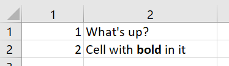
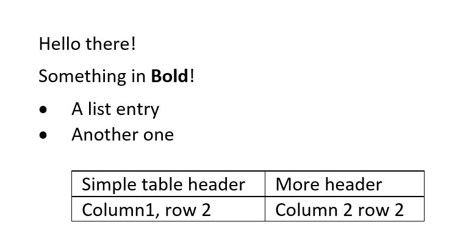

Microsoft Office files are actually zip files with a lot of XML and other stuff inside. It is remarkably difficult to get to the actual
contents of them: What is in Excel cell A1B2 or what is written in this Word document. To help with this, the xtpxlib-xoffice
component contains XProc (1.0) pipelines to extract contents from Excel (.xlsx) and Word (.docx) files:
The namespace prefix xtlxo: is bound to the namespace http://www.xtpxlib.nl/ns/xoffice
(xmlns:xtlxo="http://www.xtpxlib.nl/ns/xoffice").
.xlsx)The xtlxo:extract-xlsx pipeline takes an Excel .xlsx
file and turns this into much more manageable XML. The schema for the resulting XML format is here.
Take for instance this simple Excel sheet:

Running this through the xtlxo:extract-xlsx pipeline returns
something like:
<?xml version="1.0" encoding="UTF-8"?>
<workbook xmlns="http://www.xtpxlib.nl/ns/xoffice"
href="file:///path/to/excel.xlsx"
timestamp="2019-12-11T12:50:20.252+01:00">
<properties>
… Sheet properties …
</properties>
<worksheet name="Sheet1">
<row index="1">
<cell index="1" ref="A1">
<value>1</value>
</cell>
<cell index="2" ref="B1">
<value>What's up?</value>
</cell>
</row>
<row index="2">
<cell index="1" ref="A2">
<value>2</value>
<formula>A1+1</formula>
</cell>
<cell index="2" ref="B2">
<value>Cell with <span class="b">bold</span> in it</value>
</cell>
</row>
</worksheet>
</workbook>.xlsx)The xtlxo:modify-xlsx pipeline takes a template Excel
.xlsx file and changes this. The result will be written to a new Excel file.
It has the following features:
You can change the individual worksheets in the Excel file. A worksheet is identified by its name (the name that is visible on its tab at the bottom of the Excel screen).
You can identify a cell on a worksheet in three ways:
As a direct numeric row/column index
As identified by an Excel name. You can use this to identify a cell, by row, column, or both. An Excel name can reference an area (or even multiple areas) on a worksheet. To work around this the most upper-left cell in the named area(s) is used.
Using an Excel name (like above) and adding a numeric offset.
You can insert a numeric or string value in a cell.
You have to specify the type of the data to insert (so you can, for instance, insert a numeric value as a string if necessary)
There are some things you need to take care of creating the template Excel file:
If you need formatting in a cell you're going to fill with this pipeline (like colors, borders, etc.) there must be some contents in the cell. Since this will be overwritten it should not be a problem.
The same is true for a cell you're referencing by name: It must contain some contents. If you need this contents to be invisible you can always use a single space character.
Names of worksheets and cells are case-sensitive.
The XML for specifying the changes to the Excel file is quite simple. The schema can be found here. A simple example:
<xlsx-modifications xmlns="http://www.xtpxlib.nl/ns/xoffice">
<worksheet name="TEST">
<row name="NAMEDCELL" >
<column name="NAMEDCELL" >
<number>12345</number>
</column>
<column name="NAMEDCELL" offset="1">
<string>One to the right</string>
</column>
</row>
<row index="1">
<column index="1">
<string>Upper left-hand corner</string>
</column>
<column index="2">
<number>6E3</number>
</column>
</row>
</worksheet>
</xlsx-modifications>.docx)The xtlxo:extract-docx pipeline takes a Word (.docx) file
and turns this into an understandable XML format. This format is more experimental than the format created by the Excel conversion and there
isn't (yet) a schema for it.
As an example take this simple Word file:

Running this through the xtlxo:extract-docx pipeline returns something
like:
<document xmlns="http://www.xtpxlib.nl/ns/xoffice"
dref=""
timestamp="2019-12-11T13:09:15.415+01:00">
<properties>
… document properties …
</properties>
<p xml:space="preserve">Hello there!</p>
<p xml:space="preserve">Something in <span class="b">Bold</span>!</p>
<p class="ListBullet" xml:space="preserve">A list entry</p>
<p class="ListBullet" xml:space="preserve">Another one</p>
<p class="ListBullet" indent-left="360" indent-level="0" xml:space="preserve"/>
<table>
<tr>
<td>
<p class="ListBullet" indent-level="0" xml:space="preserve">Simple table header</p>
</td>
<td>
<p class="ListBullet" indent-level="0" xml:space="preserve">More header</p>
</td>
</tr>
<tr>
<td>
<p class="ListBullet" indent-level="0" xml:space="preserve">Column1, row 2</p>
</td>
<td>
<p class="ListBullet" indent-level="0" xml:space="preserve">Column 2 row 2</p>
</td>
</tr>
</table>
<p class="ListBullet" indent-left="360" indent-level="0" xml:space="preserve"/>
</document>
There is an experimental pipeline xtlxo:create-docx to create Word
documents (using a template Word document for things like styles, margins, etc.). If you feed this the same kind of XML you get from
xtlxo:extract-docx, the result should be a valid,
useable Word document with the new text in it. It's currently incomplete (it doesn't do tables for instance). Use at your own risk.